Andy Warhol was an American artist who was a leading figure in the visual art movement known as pop art. His works explore the relationship between artistic expression, celebrity culture, and advertisement that flourished by the 1960s.
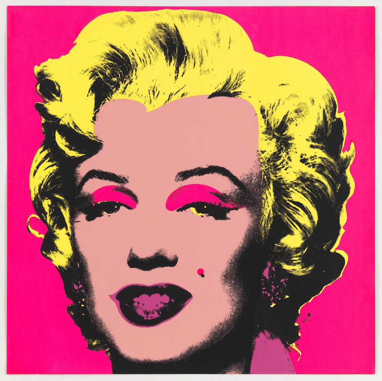
Untitled Marilyn Manroe, 1967. Screenprint, Dimensions: 36 x36 in.
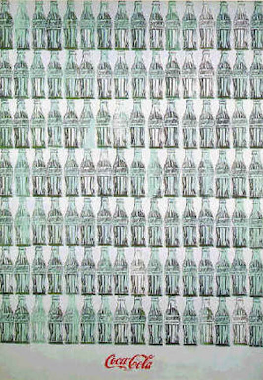
Green Coca-Cola Bottles, 1962. Acrylic, Screen Print and Graphic Pencils on Canvas, 82 3/4 x 57 1/2 in.
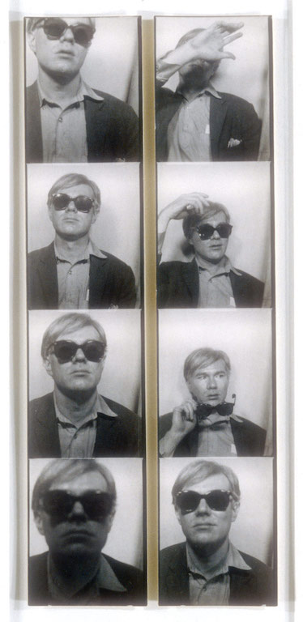
Photobooth Self-Portrait, 1963. Gelatin Silver Print (Photograph), 7 3/4 x 17/16 in.
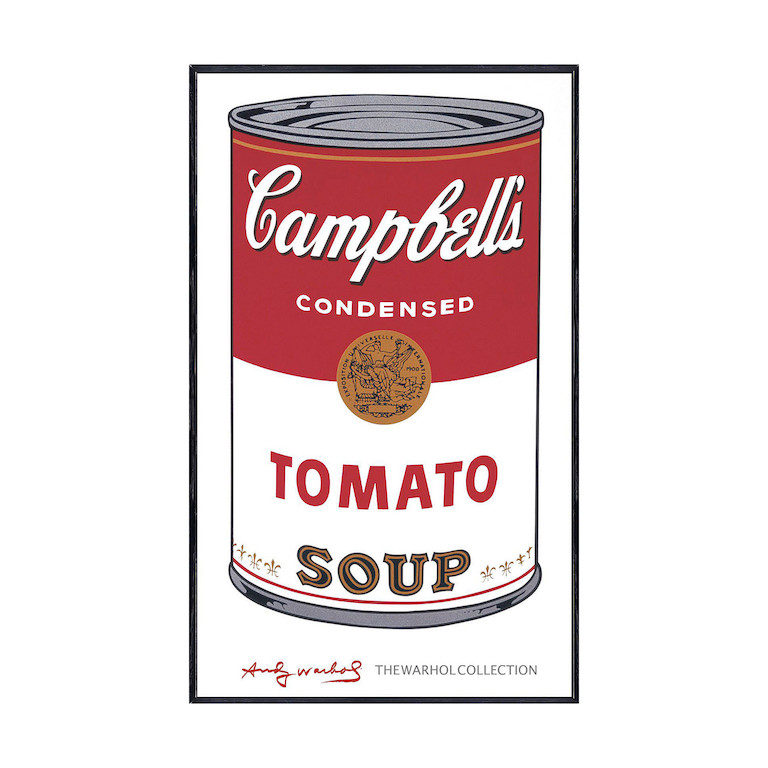
Tomato from Campbell Soup 1, 1968. Screen Print, 35 1/8 x 23 1/16 in.
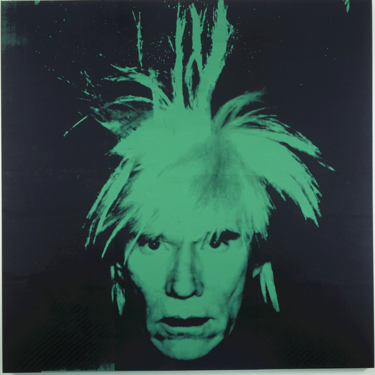
Self-Portrait, 1986. Silkscreen ink on synthetic polymer paint on canvas, 106 x 106 in.
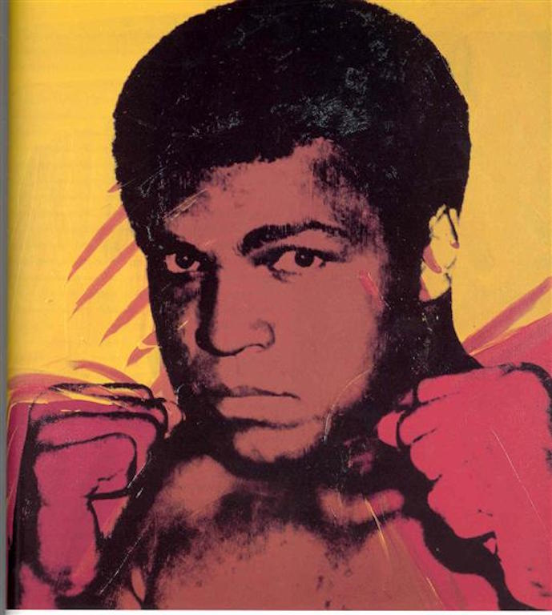
Muhammad Ali by Andy Warhol, 1978. Lithograph on Paper, 30.1181 x 24.0157 in. (765 x 610 mm)
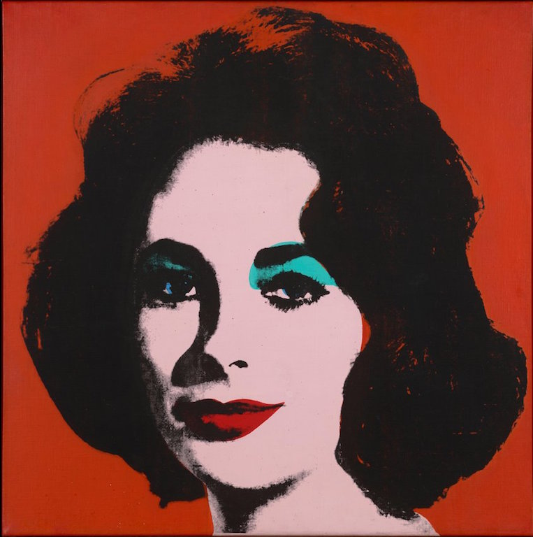
Liz #6 [Early Colored Liz], 1963.Acrylic Paint and Silkscreen Ink on Linen, 40 x 40 in.Most Wanted Men No.12, Frank B., 1964. Silkscreen Ink on Linen, Frontal View: 48 x 22 5/8 in.
Profile: 48 x 39 in
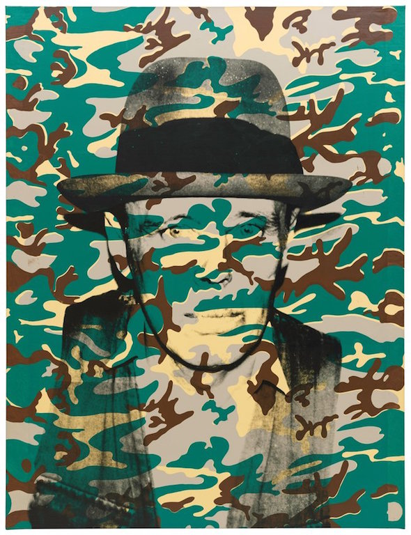
Joseph Beuys [Camouflage], 1986. Acrylic Paint and Silkscreen Ink on Linen, 110 3/4 x 84 5/8 in.
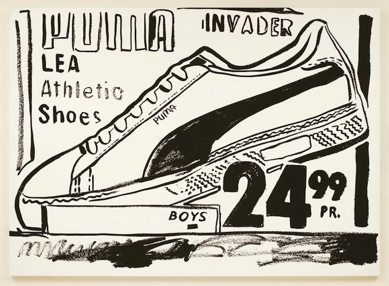
Puma Invader, 1986. Paint and Silkscreen Ink on Linen, 110 58 x 80 1/4 in.
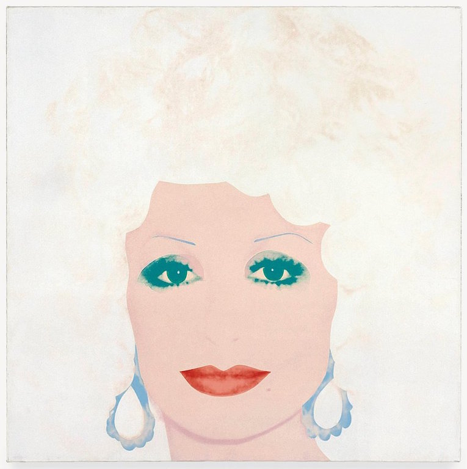
Dolly Parton, 1985. Acrylic Paint and Silkscreen Ink on Linen, 42 x 42 in.
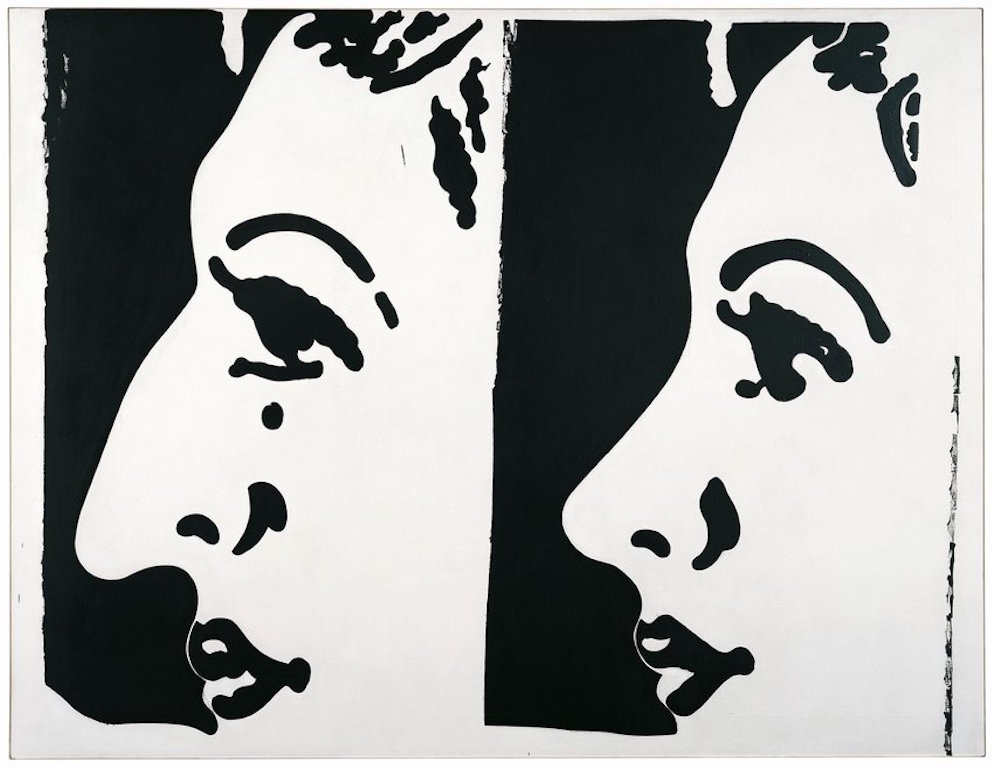
Before and After, 1961. Casein on Linen, 54 1/8 x 70 1/4 in.